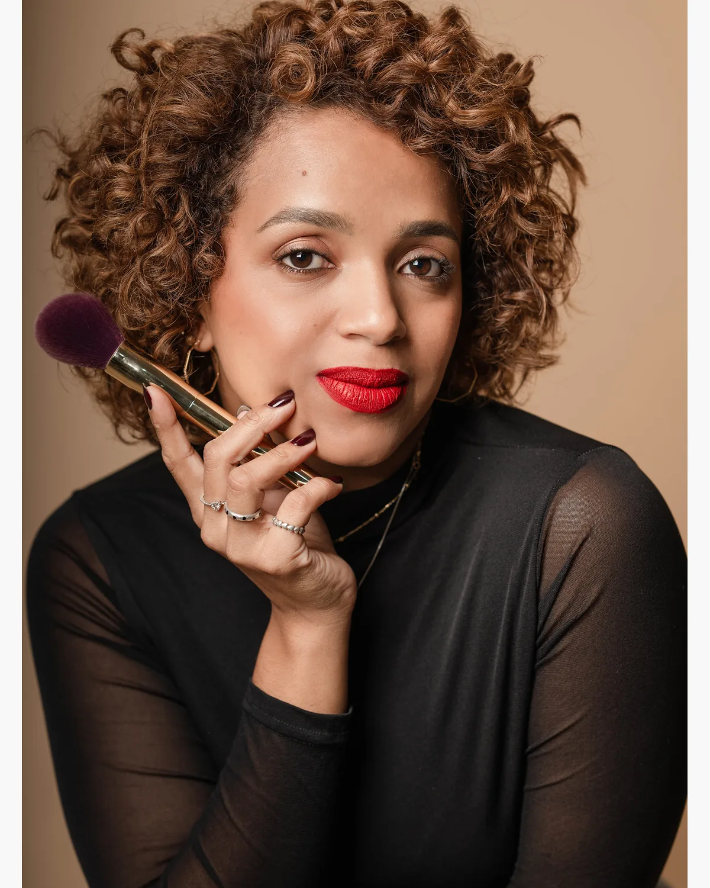
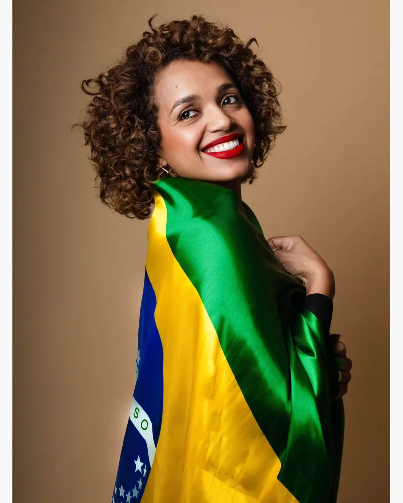
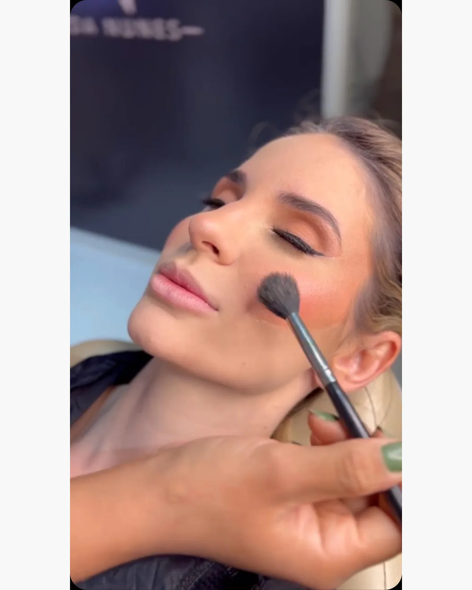
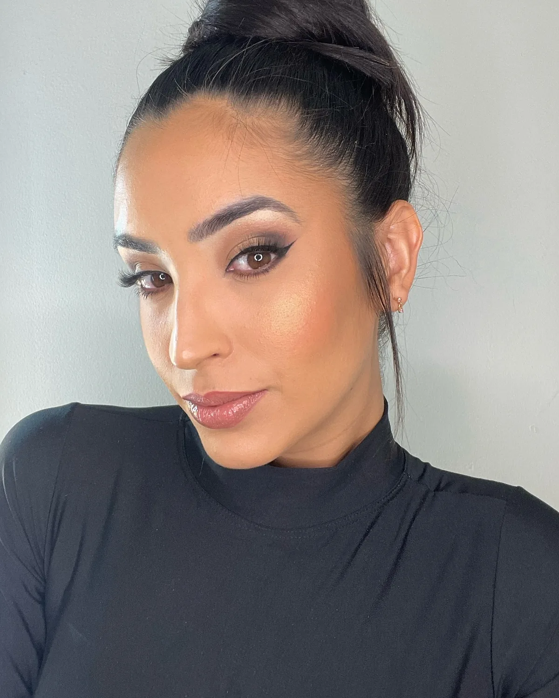
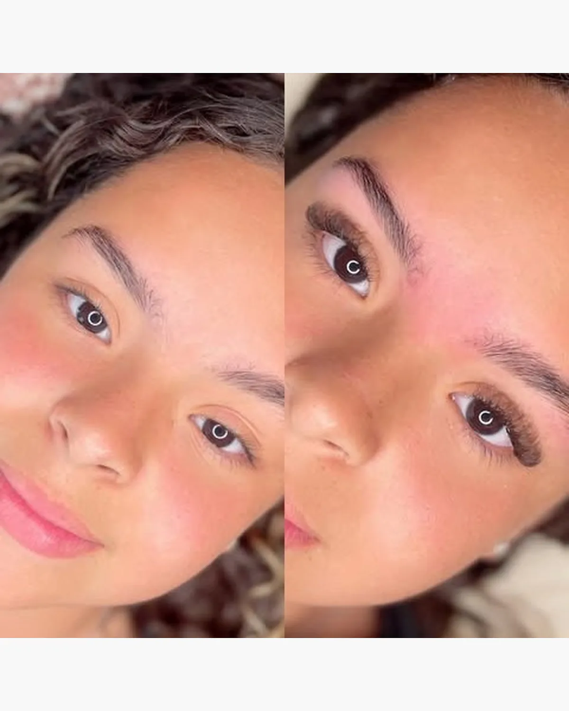
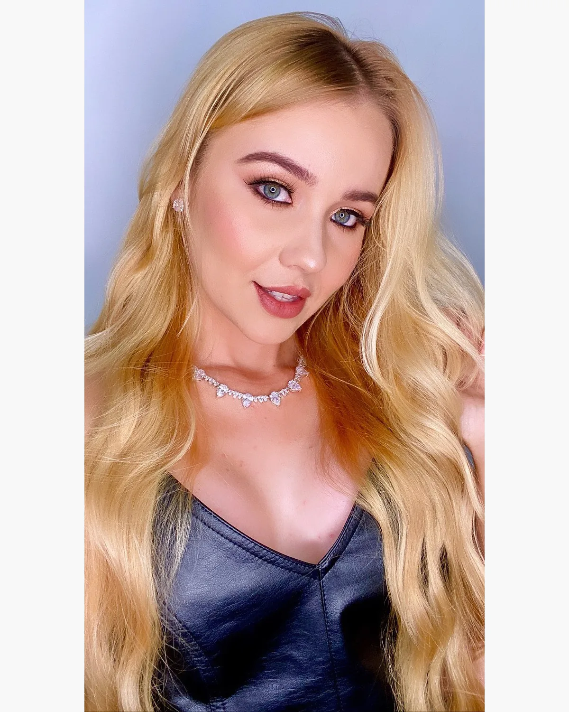
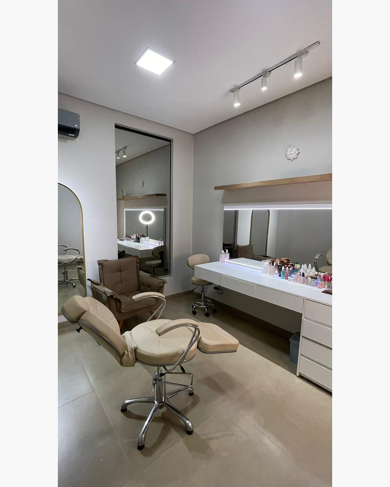
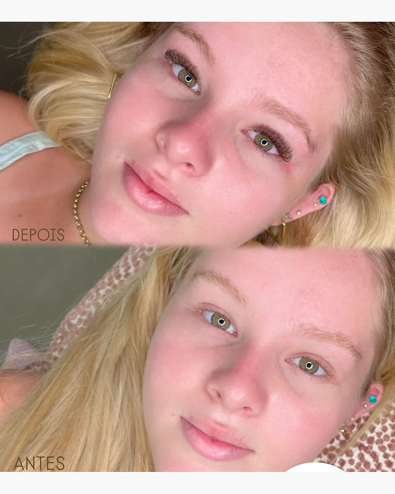
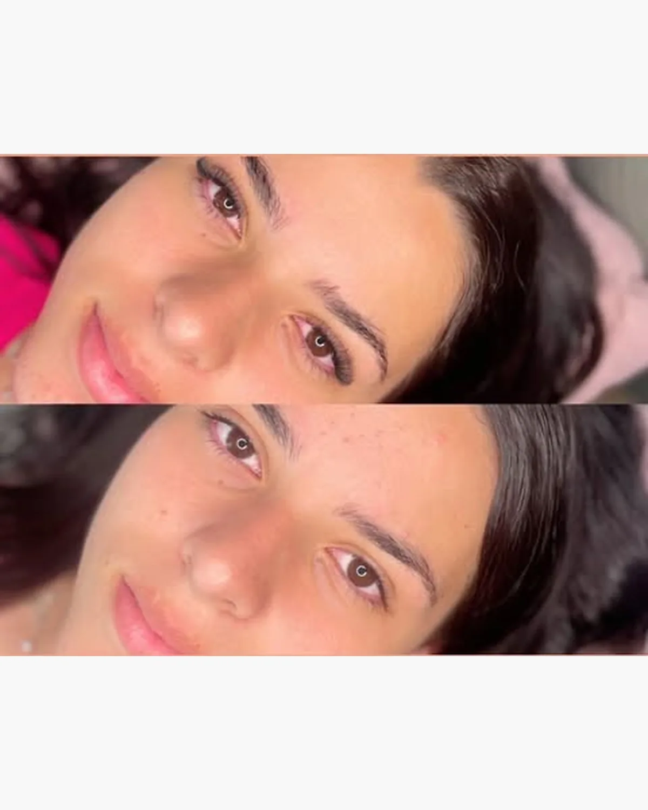
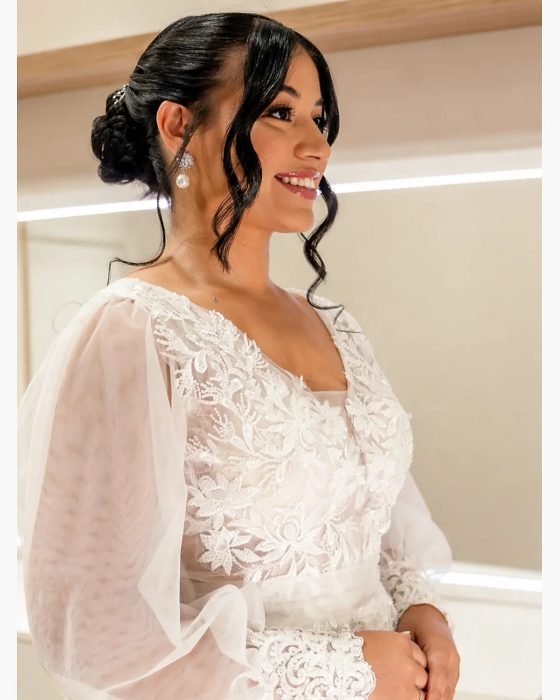

MAQUIADORA • SIDROLÂNDIA/MS
MAQUIAGEM
Produções profissionais para noivas, madrinhas, convidadas, debutantes e ocasiões especiais.

SOBRE
Maquiagem profissional e cuidados para o olhar, com um atendimento pensado para valorizar seus traços e respeitar o seu estilo.
Cada produção é construída de acordo com a ocasião, a referência que você traz e o resultado que deseja.
SERVIÇOS
Produções e cuidados pensados para diferentes ocasiões, estilos e momentos.

Noivas, madrinhas, convidadas, debutantes, ensaios, festas e eventos.
Ver trabalhos →Design de sobrancelhas pensado para harmonizar o rosto e valorizar o olhar.
Ver resultado →
Mais definição e destaque para o olhar, com acabamento personalizado.
Ver antes e depois →
Aprenda a se maquiar com mais segurança, conhecendo técnicas e produtos que funcionam para você.
Conhecer o curso
QUAL É A SUA OCASIÃO?
Escolha o contexto que mais combina com você e encontre o caminho certo para a sua produção.
NOIVAS
A maquiagem da noiva precisa acompanhar o momento: combinar com o estilo, valorizar os traços e funcionar nas fotos, na cerimônia e na comemoração.
TRABALHOS
Uma seleção de trabalhos realizados para diferentes estilos e ocasiões. Deslize para conhecer alguns dos resultados e encontrar referências para a sua produção.

ESPAÇO
Um espaço preparado para receber você com conforto, tranquilidade e atenção aos detalhes da sua produção.
LOCALIZAÇÃO
O atendimento acontece no espaço da Fernanda, em uma localização central de Sidrolândia.
RESULTADOS
Conheça alguns resultados de sobrancelhas e cílios. Cada técnica é escolhida de acordo com o efeito que você procura.


Veja de perto novas produções, bastidores e resultados.

COMO FUNCIONA
Um caminho simples para alinhar o atendimento com o que você está planejando.
Envie a data, a ocasião e o serviço que deseja pelo WhatsApp.
Fernanda orienta você sobre o atendimento e a disponibilidade.
Com tudo alinhado, seu atendimento fica organizado para o dia combinado.
DÚVIDAS FREQUENTES
Reunimos as principais dúvidas sobre serviços, agendamento e atendimento. Para valores e disponibilidade, fale diretamente com a Fernanda.
Maquiagem profissional, sobrancelhas, extensão de cílios, lash lifting e curso de automaquiagem.
Sim. A maquiagem profissional inclui produções para noivas, madrinhas, convidadas e debutantes.
O primeiro contato é feito pelo WhatsApp. A Fernanda orienta sobre o serviço, a data desejada e a disponibilidade do horário.
O atendimento é realizado em Sidrolândia/MS. Confirme endereço e disponibilidade diretamente pelo WhatsApp.
Envie uma mensagem pelo WhatsApp informando a data e o serviço que você procura para consultar valores e disponibilidade.
AGENDAMENTO
Conte para a Fernanda a data e o serviço que você procura. Ela orienta você sobre o atendimento e a disponibilidade.